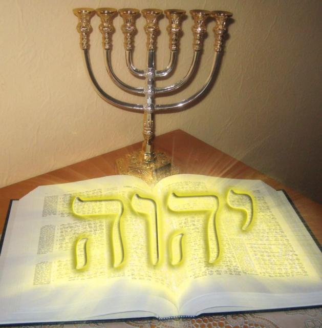

Tajemnice Starego Testamentu
Zdarza się, iż wielu współczesnych chrześcijan preferuje czytanie wyłącznie Nowego Testamentu, ewentualnie dodatkowo jeszcze Psalmów, stroniąc jednak od sięgania po Stary Testament. Jest tak dlatego, gdyż wydaje się on być księgą nieciekawą, a w najlepszym wypadku trudną i niezrozumiałą.
Często osoby czytające Stary Testament zniechęcają się opisami wielu brutalnych wojen i rzezi, przeplatanych długimi rodowodami oraz mnóstwem ‘nudnych’ przepisów rytualnych albo szczegółów wyposażenia Świątyni. Chociaż przyznają, iż znajduje się tam też kilka ciekawych historii, jak ta o stwarzaniu, albo o Józefie sprzedanym do niewoli przez braci, no i może jeszcze ta o cudownym uratowaniu Mojżesza i wyjściu Izraelitów z niewoli egipskiej.
Trudności w zrozumieniu wielu opowieści oraz proroctw biblijnych wynikają przeważnie z powodu niewielkiej znajomości historii i kultury starożytnego Izraela. Ale po co ją znać – twierdzi wielu – było, minęło. Przytakują oni, iż owszem Stary Testament zawiera wiele proroctw o Mesjaszu, ale przecież one już się spełniły. Zresztą, ‘Bóg Starego Testamentu’ wydaje się być srogi, straszny i mściwy, zsyłając ciągle okrutne kary na bezbożnych ludzi, podczas gdy ‘Ten', z Nowego Testamentu jest pełen miłosierdzia i łaski.
Czy i ty, drogi czytelniku, myślisz tak samo? Jeżeli tak, to tym bardziej zachęcam Cię do regularnego odwiedzania tego działu, w którym znajdziesz objaśnienia wielu niezrozumiałych kwestii Starego Testamentu. Ta tajemnicza księga zawiera bowiem bardzo wiele ważnych, podstawowych zasad oraz praw biblijnych, ponadto historycznych proroczych obrazów odnoszących się do bliskiej i dalszej przyszłości, która jeszcze przed nami.
Okazuje się, że wielu proroctw Nowego Testamentu (np. Apokalipsy) nie sposób dokładnie zrozumieć, jeżeli nie rozważy się ich w kontekście ksiąg Starego Testamentu: Księgi Izajasza, Ezechiela, Daniela lub tzw. proroków mniejszych (Ozeasza, Amosa, Joela, Micheasza itd.), gdyż stanowią one fundament nowotestamentowych proroctw o końcu świata. Pan Jezus i apostołowie wnoszą do nich tylko nowe szczegóły, tak więc ich cały kontekst można pojąć w oparciu o proroctwa źródłowe ze Starego Testamentu.
Kolejnym istotnym odkryciem może okazać się fakt, iż Bóg to ciągle ten sam Święty Izraelski, zarówno w Starym i Nowym Testamencie, a Jego prawa i mierniki sprawiedliwości nie zmieniły się ani odrobinę pod wpływem współczesnych, moralnych trendów. Poznanie Jego zdumiewającej osobowości napełni Cię jeszcze większym szacunkiem do Niego i zrozumieniem w jaki sposób Wszechmocny postępuje, a co najważniejsze jak będzie postępował ze współczesną ludzkością, a więc i każdym z nas.
Dowiesz się także, dlaczego Pisma Starego Testamentu poświęcają tyle miejsca na dzieje starożytnego Izraela, liczne rodowody lub dlaczego opisują szczegóły Świątyni w najdrobniejszych detalach, łącznie z zawiłymi opisami rytualnymi. Bóg z pewnością nie umieścił tych opisów po to, żeby nas zanudzić, albo zniechęcić do czytania swojej Świętej Księgi. One muszą mieć istotne znaczenie skoro zajmują tyle miejsca w Biblii.
Zrozumiesz też głębokie znaczenie świąt biblijnych obchodzonych przez Izraelitów, które proroczo wskazywały na Mesjasza, ale choć niewiele osób zdaje sobie z tego sprawę, także sięgają w przyszłość wybiegającą poza nasze czasy.
Z powodu tych mnóstwa omówionych tu a niewyczerpanych jeszcze powodów, dla których warto czytać Stary Testament, osoby które tego nie czynią bardzo zubożają się duchowo. Czytanie wyłącznie Nowego Testamentu można przyrównać do oglądania końcówki interesującego filmu. Owszem ‘happy end’ jest ciekawy, ale żeby zrozumieć cały jego sens, trzeba obejrzeć film od początku. Im bardziej się go rozumie, tym więcej z tego wynika korzyści duchowych. Dokładnie tak samo jest ze Starym Testamentem.
Dołożę zatem wszelkich starań, aby zaciekawić Cię tą wspaniałą księgą i odkryć jej tajemnice. Wkrótce się okaże, że wcale nie jest ona nudna, ale wręcz fascynująca.
-----------------
OBJASNIENIA
Nowy Testament - część Biblii chrześcijańskiej; stanowi zbiór 27 ksiąg, przedstawiających wydarzenia z życia Jezusa i wczesnego Kościoła oraz pouczenia skierowane do wspólnot chrześcijańskich, tradycyjnie datowanych na drugą połowę I wieku; niektóre księgi datuje się również na pierwszą połowę II wieku; główne źródło chrześcijańskiej doktryny i etyki. Obecny skład Nowego Testamentu podany po raz pierwszy znajduje się w liście Atanazego z 367 r. Taką samą listę ksiąg uznanych za kanoniczne ratyfikowały synody w Hipponie (390 r.) i Kartaginie (393 r.). W języku hebrajskim księgi Nowego Testamentu noszą nazwę Brit Hadasza [źródło: http://pl.wikipedia.org/wiki/Nowy_Testament] Stary Testament - Biblia Hebrajska, Pisma Hebrajsko-Aramejskie – starsza część Biblii, przyjęta przez chrześcijaństwo z judaizmu. Judaistyczna (a za nią protestancka) wersja obejmuje 39 ksiąg (tylko hebrajskich), katolicka zawiera 46, a prawosławna w sumie 50-53 (księgi hebrajskie i greckie z Septuaginty oraz niekiedy apokryfy). Stary Testament razem z Nowym Testamentem tworzą chrześcijańskie Pismo Święte. [źródło: http://pl.wikipedia.org/wiki/Stary_Testament] W języku hebrajskim księgi Starego Testamentu noszą nazwę Tanach---------------
Tajemnice Starego Testamentu
Książka

Żydowska filozofia
Czy Bogu podoba się żydowska numerologia, kabała i cała żydowska filozofia?
witam! szukam dobrego
TANACH.